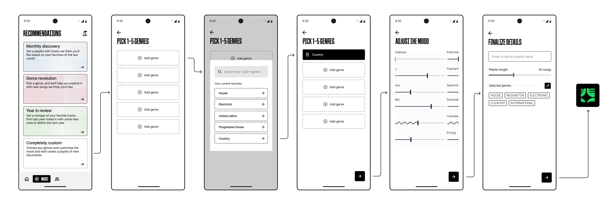
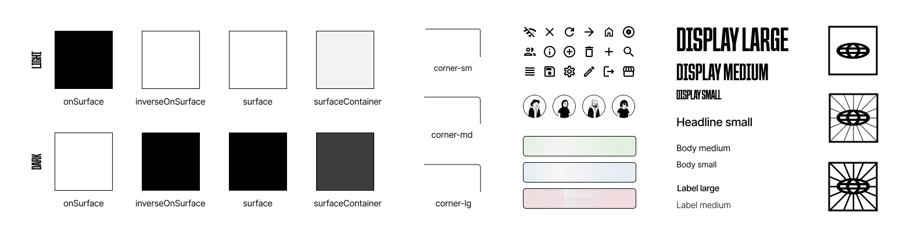
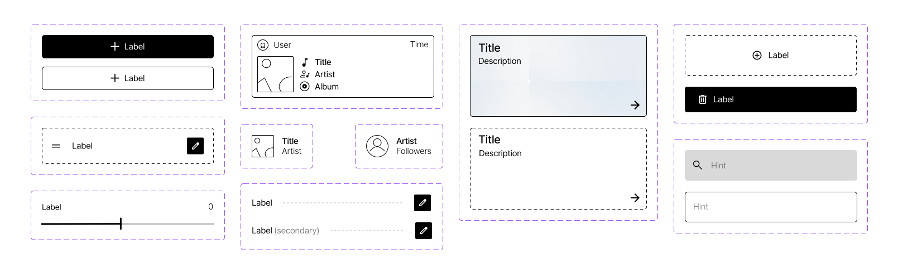
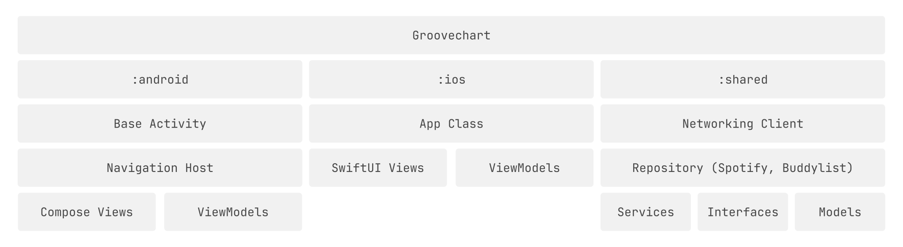

GROOVECHART
February 2024 - Present
Android/iOS Application
February 2024 - Present
Android/iOS Application
Groovechart is a companion mobile app for Spotify, allowing users to access stats about their music taste, see what friends are listening to, and expand their taste through generated playlists. I leveraged the Spotify Web API and Buddylist for the backend of this project, and used the Kotlin Multiplatform Mobile (KMM) framework to build the iOS/Android apps.
GENERATED PLAYLIST WALKTHROUGH
Being one of the central features of the product, users are able to get generated playlists using the recommendation endpoint (from Spotify Web API). While Spotify already provides various playlists containing songs that users might like (based off of their listening history), I wanted to allow users to fine tune the exact mood of their discovery playlists and take advantage of all the parameters available in the recommendation endpoint.
Above is a storyboard of the process that a user would go through to use the playlist generation / recommendation feature of the app. The app offers a few pre-configured themes to choose from for easy, one tap playlist creation, but in the above process, the user selects the "Completely custom" option which allows them to have full control over the genres, mood and length. My main focus in determining how to structure the customization interface was to communicate the intended course of action to users through layout, using typography hierarchy, large actionable blocks, dashed vs filled outlines and light animation upon interaction. I've also implemented my WaveSlider library in the "Adjust the mood" page to give a smooth animation to the sliders upon drag.
BUILDING A PRODUCT IDENTITY
In the final iteration of the app, I wanted to create a design system that was consistent and bold, but not too overcrowded to maintain clarity and ease of use. In the design system, I used a monochromatic color palette, light shape outlining and moderate corner sizing to embrace a content-centric interface where artist images and cover art take the main stage in full color. For display typography, I elected to use the bold and expressive Queering font which complements the dense yet clear main interface, and Inter elsewhere as a clean sans-serif that is easy to read and doesn’t take the attention away from the main content.
This was also a really good exercise in using design tokens - in this project I draw heavily on the Material 3 system but use custom branding (and opting out of dynamic color) and typography. Using these tokens gave me some good practice in asset & style libraries in Figma, which translate really nicely to a faster implementation for both native apps. Since KMM allows for a central "logic" module while the UI is still implemented natively, I was able to plug-and-play the styles and components that I created in Figma in the SwiftUI and Jetpack Compose counterparts. This gave a lot more structure to the steps I took to implement the project, and allowed more time to focus on bug fixes/central API logic/performance optimization.
Shown above are some of the UI components that I created in my Figma project library, all of which apply the design tokens created as part of my custom Groovechart design system (text styles, color, shape, icon components, etc.)
ITERATIVE DESIGN PROCESS
Over the course of this project's design phase, I went through three main design iterations, starting with one based off of Material 3 theming, then proceeding to create a custom design system, and in the final iteration, a refined version of my custom system that focuses on visual communication, consistency, and simplicity. A few main highlights include:
I learned a lot more about design tooling as well throughout the design iteration process, as this was one of the first projects that I've done following a meticulous design process. Before, in Figma I would create my layouts by just copy and paste of elements using shapes and text, but without any constraints however in this project, going from the second to third iteration, I learned and used the layout/auto layout features, constraints, components and design tokens to make the process scalable, consistent and easy to transition to the development phase.
Shown below is the progression of the design of the home tab: In terms of color, in the first iteration I decided that the highly rounded and accent-colored design took away from the content (track and artist art), so I moved in the next iteration to one that emphasized top songs & artists leaving everything else grayscale. For typography, I knew I wanted a bold look to the app, but the Poppins typeface (Iteration 1) was a little bit too bold, so I moved to the still-bold-but-compact Queering font in iterations 2 & 3, really reflecting that compactness in the final iteration with content becoming more dense, and a clear hierarchy established.

DEVELOPMENT & FRAMEWORK
I opted to implement the Model-View-ViewModel (MVVM) architecture for the entire project, where:
This was a good choice for keeping the UI and backend logic separated so that it's easier to maintain, but also was helpful during my journey of learning the iOS framework and Swift language since I had previous experiences with the Android native framework, but this was the first time that I was writing an iOS native application.
In the development process of this app, I also chose to focus on accessibility and having stronger error handling.
PROJECT TAKEAWAYS
work in progress !